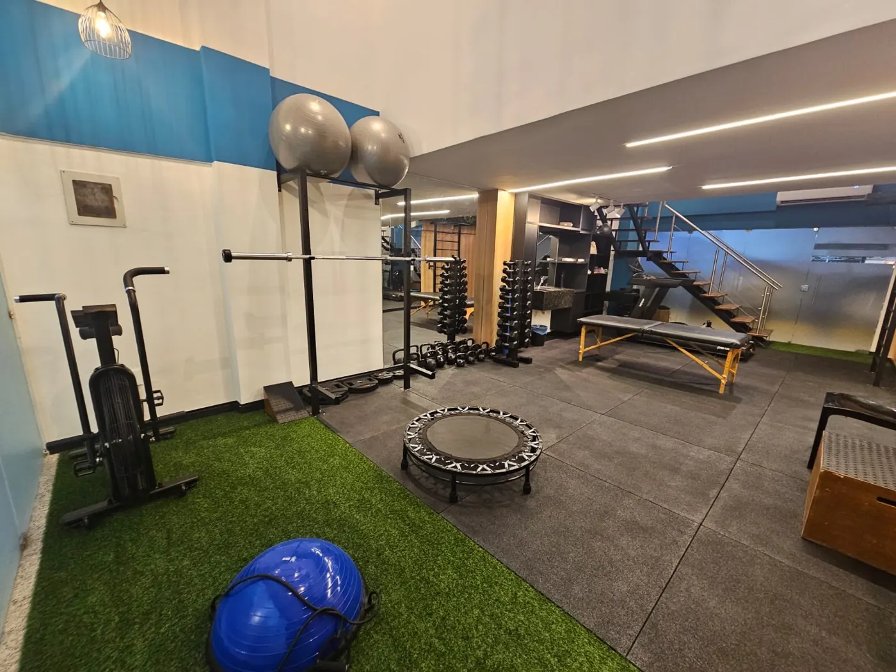

Fraturas
Recuperação de movimento e força após a consolidação, com segurança em cada fase.
Operou? Sua recuperação merece critério em cada etapa.
Do preparo antes da cirurgia até o momento de voltar a andar, dirigir ou treinar: conduzimos sua reabilitação em Lagoa Nova com metas claras, respeito à cicatrização e testes objetivos de força.
Recuperação de movimento e força após a consolidação, com segurança em cada fase.
Reabilitação para voltar a andar, subir escadas e retomar a rotina com a nova articulação.
Reparo de tendões do manguito e liberação de ombro congelado, respeitando o tempo de cicatrização.
Meniscectomias e suturas meniscais, com progressão de carga definida junto com o cirurgião.
Do pós-operatório imediato ao retorno ao esporte, com testes de força para decidir cada avanço.
Discectomias e artrodeses: retomada do movimento e fortalecimento com segurança.
No pós-operatório, avançar cedo demais traz risco, e atrasar demais atrasa a recuperação. Sob condução do Dr. Yves Oliveira, especialista em traumato-ortopedia pela residência da UNIFESP, cada fase é liberada com base em critérios objetivos, seguindo as orientações do seu cirurgião.
Usamos testes de força, como a dinamometria, para decidir cada avanço, do pós-operatório imediato ao retorno às atividades.

Em muitas cirurgias ortopédicas a fisioterapia começa nos primeiros dias, seguindo a orientação do cirurgião. Na avaliação, conferimos as restrições do seu caso.
Sim, quando indicado. Chegar à cirurgia com mais força e mobilidade costuma facilitar a recuperação depois.
Seguimos as orientações do cirurgião e, quando necessário, mantemos contato para alinhar as fases da reabilitação.
Fale conosco no WhatsApp para alinharmos o melhor momento da sua avaliação em Lagoa Nova.